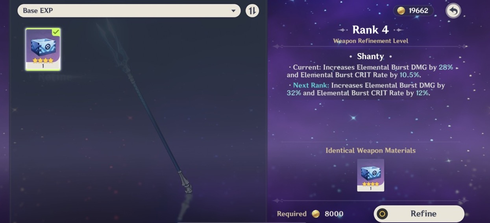
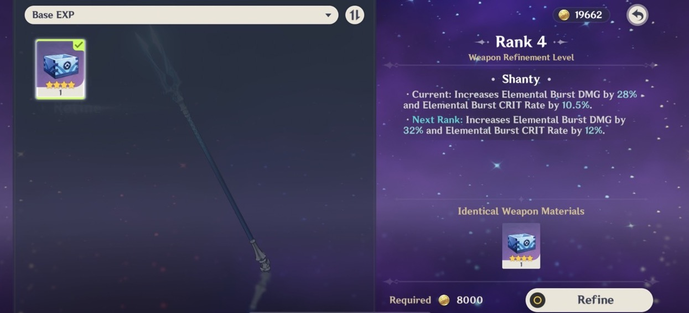
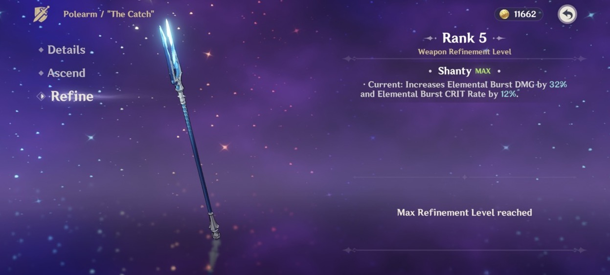
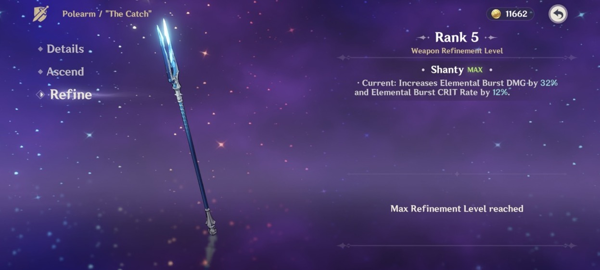
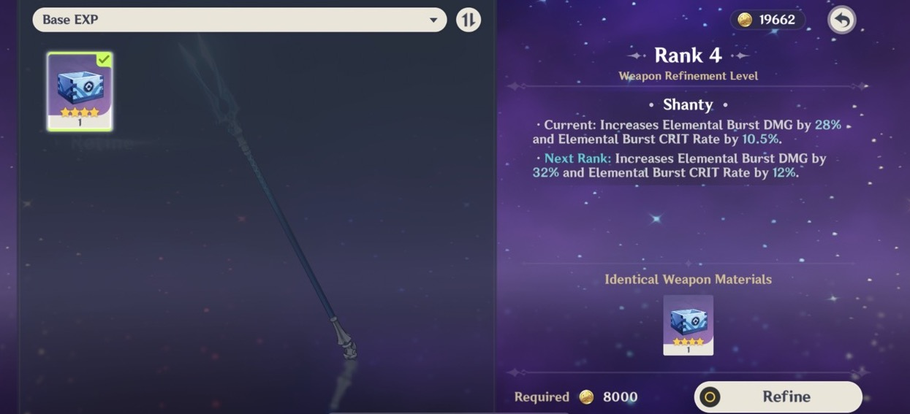
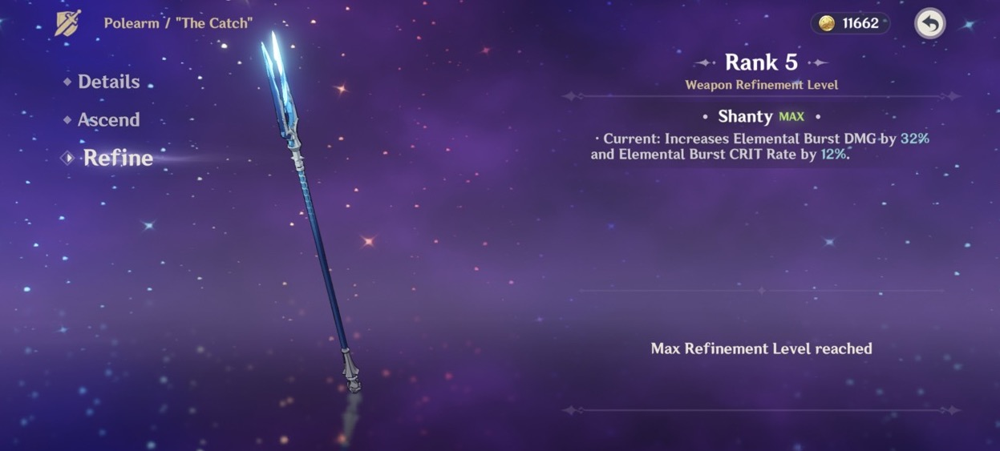

 

Version 2.1 was one of the best versions because Raiden Shogun executed Rosalyn, one of the greatest events to unfold in Genshin history. Rosalyn (Signora), one of the Fatui Harbinger puppets, abused and kicked Venti in the Mondstadt arc. We finally got our revenge by killing her.
It is a tremendous show of Genhsin's defiance to USA imperialism and all their client states, colonies, and proxies. The event where we got to eradicate Fleein' Lin was the cherry on top and is a grave warning to all the traitors who collude with the USA empire.
It is almost no surprise that the USA media and FBI had a total meltdown during this patch and started attacking Genshin. When the USA starts attacking you, it means you are doing something right. You are destroying the empire and hegemony.

